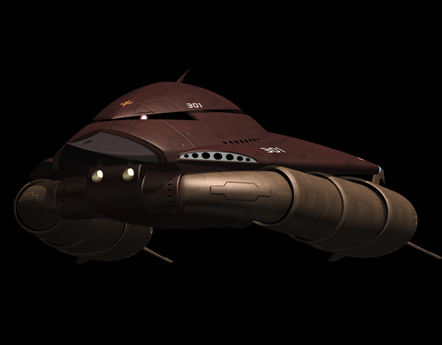

| MAM-07 Grabro Large Zeon Duchy Marine Combat Mobile Armor |
|
|  | |
General and Technical Data |
|
|
Model number: marine mobile armor Operator: Zeon Duchy Dimensions: overall height 26.1 meters, overall length 40.2 meters Weight: empty 274.1 metric tons; max gross 743.7 metric tons Propulsion system: 8 x main hydrojet engine; 2 x arm hydrojet engine Powerplant: Minovsky type ultracompact fusion reactor, output rated at 11000 kW Equipment and design features: sensors, range 60000 meters; segmented and jointed arm systems, mounts numerous thrusters for underwater combat Fixed armaments: 2 x 7-tube torpedo launcher, 3 round magazine per tube, mounted in main body; 2 x 8-tube surface-to-air missile launcher, mounted in main body; 6 x claw |
|
| Technical and Historical Notes | |
|
Concurrently with the development of the Mad Angler large-scale submarine tender, Zeon R&D staff, along with some assistance with MIP, rolled out a new mobile armor for marine combat. Like the earlier MAX-03 Adzam is on land, the new MAM-07 Grabro is a fearsome machine underwater.
Developed to supplement marine mobile suits with heavy firepower during amphibious attacks, as well as to provide a tough and durable weapons platform for underwater combat, the Grabro carries on the fear and intimidation that has become a hallmark of Zeon's mobile armor program. The Grabro's primary armament are a set of seven-tube torpedo launchers mounted directly behind its advanced sonar dome "nose" section. Various sizes and payloads allow the Grabro to effectively deal with both enemy surface warships and other aquatic targets. As with anything underwater, it is vulnerable to attack from above, so the Grabro is equipped with a set of surface-to-air antiaircraft missile launchers. They take off vertically, similar to a miniturized version of the Mad Angler's long-range boomer missiles. Three claws, usually used as maneuvering surfaces but quite capable of hack-and-slash attacks, are mounted on each of its "arm" appendages.
One of the Grabro's finest features are its gigantic "arm" devices. These multi-jointed appendates are flexible and can move in virtually any direction, allowing it to direct thrust from its hydrojets virtually anywhere. This gives the Grabro unprescedented maneuverability that even eclipses marine mobile suits in underwater combat.
|
 RPG quick stats sheet
RPG quick stats sheet | Weapons and Features | |


Grabro Cockpit |
|